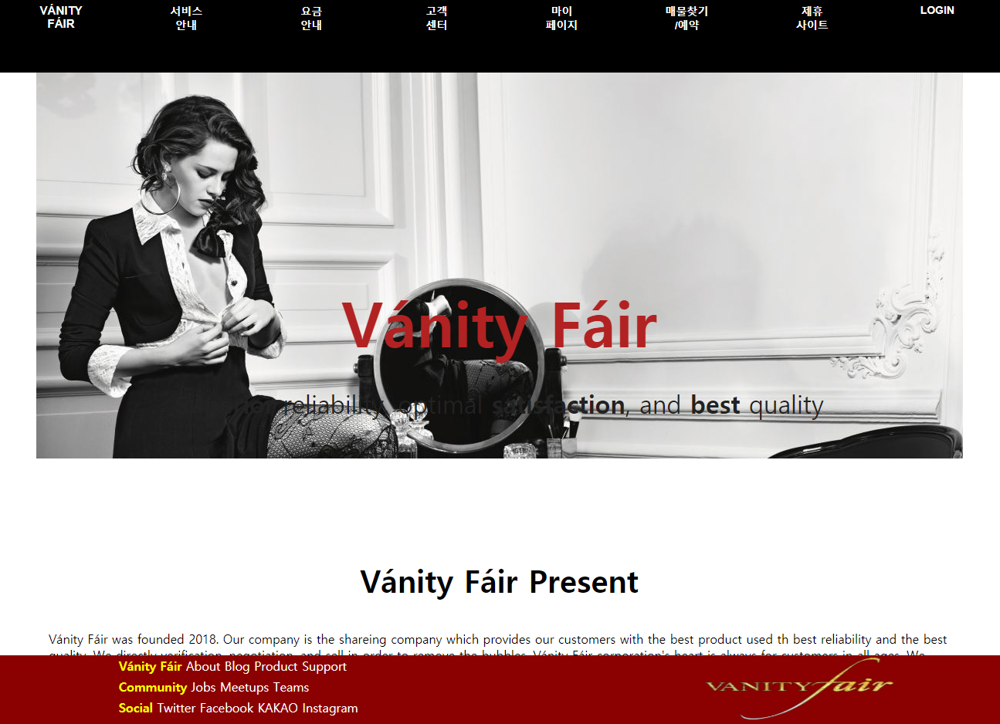
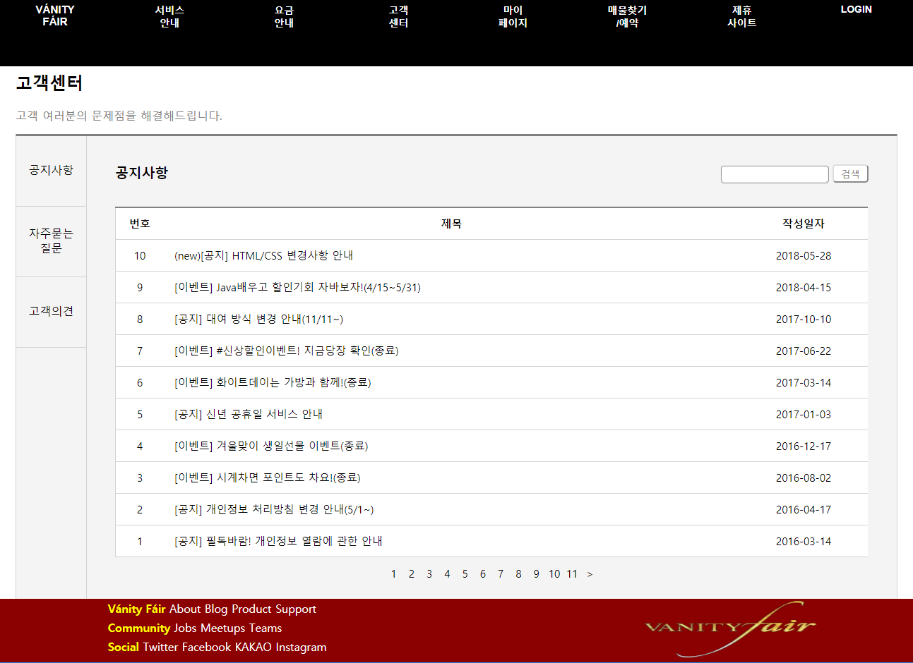
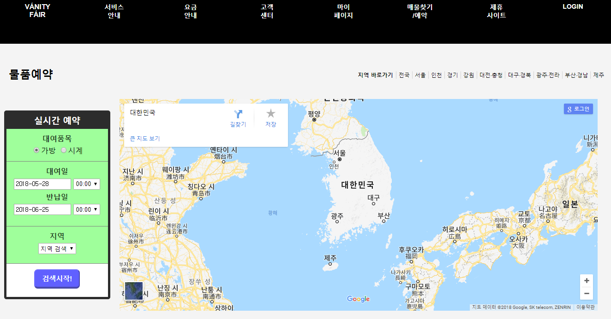
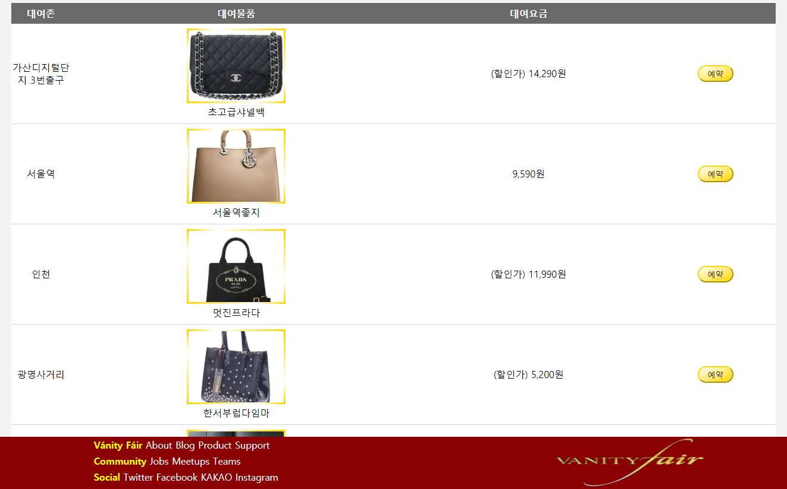

@ 개발개요 : 명품가방/명품시계 렌탈 사이트의 UI 구현
@ 개발환경 : Brackets - HTML, CSS, JS, jQuery
@ 참여인원 : 3인 (이종화, 박경진, 소인성)
@ 개인 담당부분 : ①고객센터 게시판 ②매물검색/예약 화면
@ 웹사이트 개요

① 구성이나 레이아웃은 카셰어링 사이트인 쏘카(socar) 홈페이지를 참조
② 사이트 테마에 맞게 스타일과 색상을 고급스런 이미지로 디자인
③ 각 페이지로 이동하는 역할의 헤더 / 페이지 내용이 담긴 중간 섹션 / 하단의 푸터로 3단 구성
④ jQuery를 활용하여 최대한 싱글페이지 기능 구현
@ 고객센터 화면 설명

① 쏘카 홈페이지의 고객센터를 참조
② 타이틀, 탭, 제목, 검색창, 게시판(테이블)으로 레이아웃 분리
③ 탭, 게시판 순서 목록, input 버튼 등에 마우스를 가져갈 경우(hover시), 해당 부분의 색상 변경
④ jQuery를 활용, 선택한 탭에 따라 index값을 받아 게시판 테이블(display)이 변경되게끔 기능 구현
⑤ 고객의견 선택 시 '글쓰기'버튼 생성 // 자주 묻는 질문 선택 시 게시판 순서 목록 제거
@ 고객센터 화면의 반응형 변경내용
⑴ 태블릿
① 좌측에 있던 탭 부분을 상단으로 이동
② 전체적인 마진, 패딩, 사이즈 값 축소
⑵ 모바일
① 전체적인 사이즈를 더욱 줄이고 좌우 마진을 최소화
② 한 줄에 있던 게시판 제목과 검색창, 그리고 게시판 순서 목록과 글쓰기 버튼을 상하로 분리
③ 11까지 있던 게시판 순서 목록을 7까지 축소
@ 매물찾기/예약 화면 설명
 
① 마찬가지로 쏘카(socar) 홈페이지의 예약화면을 참조
② 타이틀, 지역선택 네비게이션, 예약 리모콘, 지도, 물품목록 테이블로 레이아웃 분리
③ jQuery를 활용하여 지역 바로가기에서 해당 지역을 선택 시 구글맵의 내용이 변경됨
④ 예약 리모콘은 radio/date타입의 input태그와 select태그, button 태그를 활용해 구성
⑤ 검색시작 button 누를 경우 가방/시계 선택에 따라 하단 물품목록의 내용 변경
⑥ 동시에 선택한 지역에 따라 구글 맵 내용 변경 (③과 같은 JS함수를 사용)
⑦ 하단 물품목록 테이블에서는 버튼 부분에 그라데이션과 애니메이션(hover시)을 활용
@ 매물찾기/예약 화면의 반응형 변경내용
⑴ 태블릿
① 공간이 부족해진 네비게이션 부분을 줄바꿈해 width를 100%로 확대
② 전체적인 사이즈를 줄이고 리모콘 디자인을 단순화
⑵ 모바일
① 타이틀과 바로가기 네비게이션을 없애 구성을 단순화
② 좌우 마진이나 폰트 사이즈를 줄여 공간을 확보
후기
처음 시작할 때 너무도 가벼운 마음으로 프로젝트를 계획했고, 큰 계획없이 레이아웃을 잡아 진행한 나머지 도중에 컨셉이 애매해져 갈아엎을 필요가 생겨 고생을 했습니다. 하지만 결과적으로 그 선택이 더 사이트의 컨셉에 맞는 디자인이 되어 만족스럽습니다.
DB와의 연결 없이 하드코딩으로 진행하여 UI 이외의 면이 부족한 것은 조금 아쉽지만, 이번 프로젝트 덕분에 HTML과 CSS을 학습하는데 많은 도움이 되었습니다. 기회가 된다면 이번 경험을 살리면서 JS까지도 심도있게 활용하여 더 완성도 있는 웹사이트 구현에 도전해보고자 합니다.